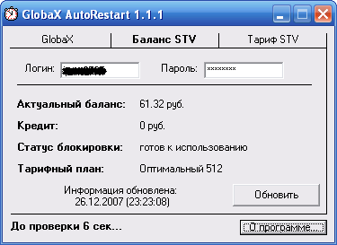

|
 |
|
|
|
|
Назначение и применение программы
Непосредственно из программы можно останавливать, запускать или перезапустить GlobaX;
Возможность проверки на зависание GlobaX через произвольный интервал времени, программа перезапускает GlobaX если он завис;
Возможность одним нажатием менять файл globax.conf, доступно использование трех вариантов globax.conf;
GlobaX можно запускать с приоритетом RealTime;
Программа все время находится в трее, и вы можете использовать все ее функции при помощи выпадающего контекстного меню;
Проверка баланса (только провайдер STV);
Смена тарифного плана (только провайдер STV).
Установка и настройка программы
Запустите инсталляционный файл;
Измените информацию в файлах настроек Config1.txt, Config2.txt и Config3.txt, можете просто заменить весь текст в них на текст вашего globax.conf. После первого запуска загрузите одну из конфигураций;
Запустите GlobaX AutoRestart;
Добавьте программы globax_daemon.exe в папке с программой в исключения брандмауэра WindowsXP SP2 (Панель управления - Брандмауэр Windows - Исключения - Добавить программу... - Выберите файл - Нажмите Ок) или просто отключите его, после перезагрузите компьютер;
Если вы замечали что GlobaX у вас зависает, установите опцию автоматического перезапуска. При этом через указанное время в секундах, будет производится проверка GlobaX на зависание. Если он зависнет, программа перезапустит его. После каждого изменения интервала не забывайте нажимать "Сохранить";
Для того что бы заменить файл globax.conf, нажмите на значке программы в трее правой кнопкой мыши, и в контекстном меню выберите "Конфигурации -> Config №1, №2 или №3", GlobaX будет автоматически остановлен, заменен файл globax.conf и запущен;
Для получения вашего баланса перейдите во вкладку "Баланс STV", введите ваши логин и пароль, нажмите "Обновить". Если вы желаете чтобы программа постоянно следила за балансом, установите опцию автоматического обновления. При этом программа будет обновлять информацию каждые 10 минут, и если сумма баланса окажется меньше 300, 200, 100, 50 или 10 руб. она оповестит об этом;
Для смены тарифного плана перейдите во вкладку "Тариф STV", введите ваши логин и пароль (если необходимо), выберите тариф и нажмите "Изменить". После каждого изменения тарифа программа автоматически перезапускает GlobaX через 3 минуты, для того чтобы изменения вступили в силу.
Добавьте сайт https://cabinet.stv.su в надежные узлы браузера.
Установите сертификат STV.su, скачать можно здесь.
Ошибка "Не найдена форма ввода логина и пароля" возникает из за не установленного сертификата (см. выше), при этом проверка баланса и смена тарифа не работает.
Примечание: В файле globax.log хранятся логи программы GlobaX AutoRestart
| WebMoney: |
Z665183144599 R891948467318 |
Авторские права на программу принадлежат kas-cor
Программа распространяется бесплатно по лицензии "Как есть", запрещается любая модификация файлов дистрибутива, и распространение программы с взиманием платы.
Все вопросы по работе программы просьба отправлять на адрес support@kas-cor.ru
Не забудьте указать по поводу какой программы вы обращаетесь!!!